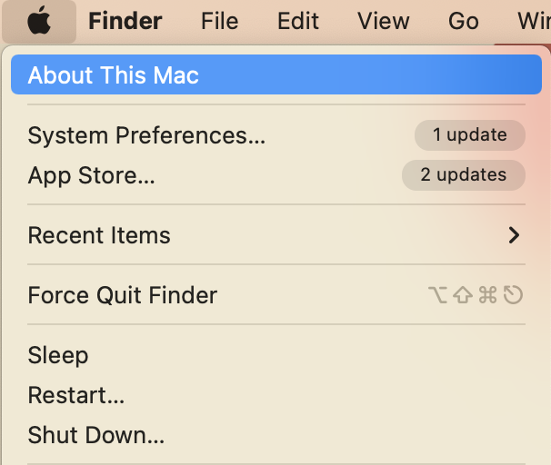

Installing R and RStudio
This page is about getting R and RStudio installed on your laptop so you can start using R! Below are step by step instructions for getting the software needed installed.
Windows install
Install R
To install R, you need to download the installer from the R website
Click on either base or install R for the first time
Click on the download R for Windows link
Once downloaded, open the
.exefile and follow the installation instructions on your computer
Install RStudio
To install RStudio we download it from the Posit website
Click on the Download RStudio Desktop link
Once downloaded, open the
.exefile and follow the installation instructions on your computer
Mac install
Install R
To install R on your Mac you need to know the type of processor your Mac uses. This is straightforward to find out:
- On the top navigation bar on your Mac, click on the apple icon
- From the drop down menu, select About This Mac
- In Overview you will find the information about your Mac. If you have an Intel Mac, you will see the processor row, which has information that includes Intel. If you have an M1 or M2 Mac, you will see chip and M1/M2 in the Overview with something like Chip Apple M1
 
M1 or M2 Mac
To install R, you need to download the installer from the R website
If you have a M1 Mac you will need click on the link the contains arm64 to download R. It will look something like
R-4.3.1-arm64.pkgOnce downloaded, open the
.pkgfile and follow the installation instructions
Intel Mac
To install R, you need to download the installer from the R website
If you have a Intel Mac you will need to click on the link that just contains the version of R. It will look something like
R-4.3.1.pkg, and can be located a touch further down the page under the header Binaries for legacy macOS/OS X systems:Once downloaded, open the
.pkgfile and follow the installation instructions
Install XQuartz
To run R on a Mac operating system, XQuartz is required. You can install it by following this link, downloading it and following the installation instructions.
Install RStudio
To install RStudio we download it from the Posit website
Click on the Download RStudio Desktop link
Once downloaded, open the
.dmgfile and follow the installation instructions on your computer
Installing R and RStudio installation issues
If your installation for R and RStudio did not work, this is likely because your computer is running an older operating system. In these cases you will have to install an older version of the software.
It will be simplest, if you have faced installation issues, for you to come to a R workshop for support or book a 1-2-1 support session.